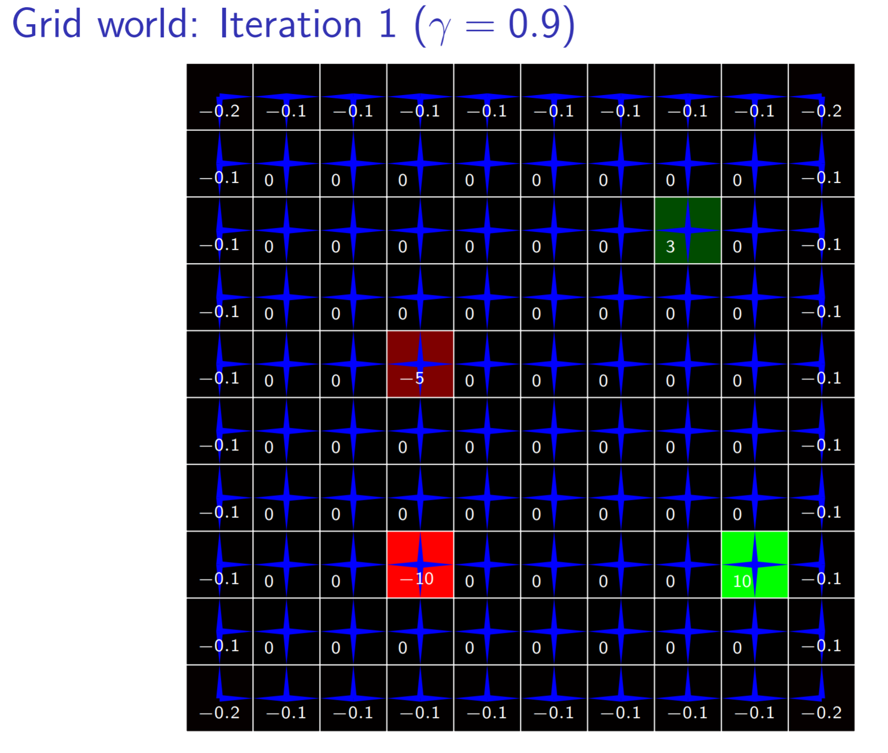
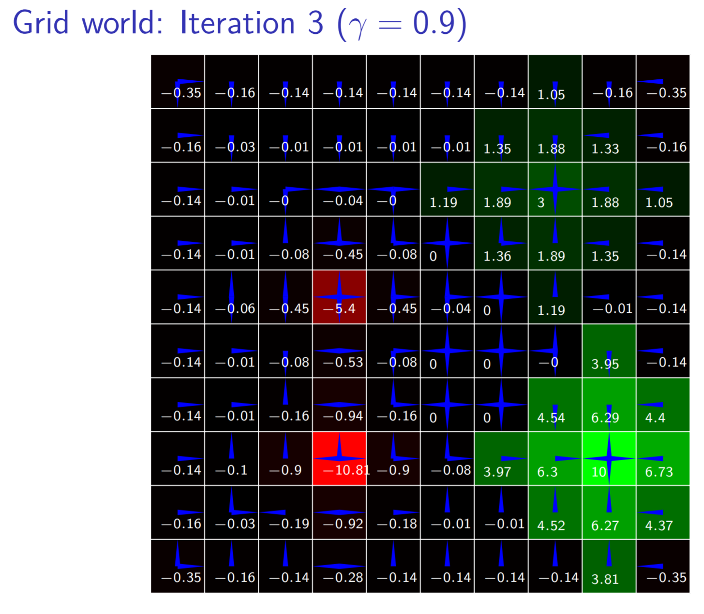
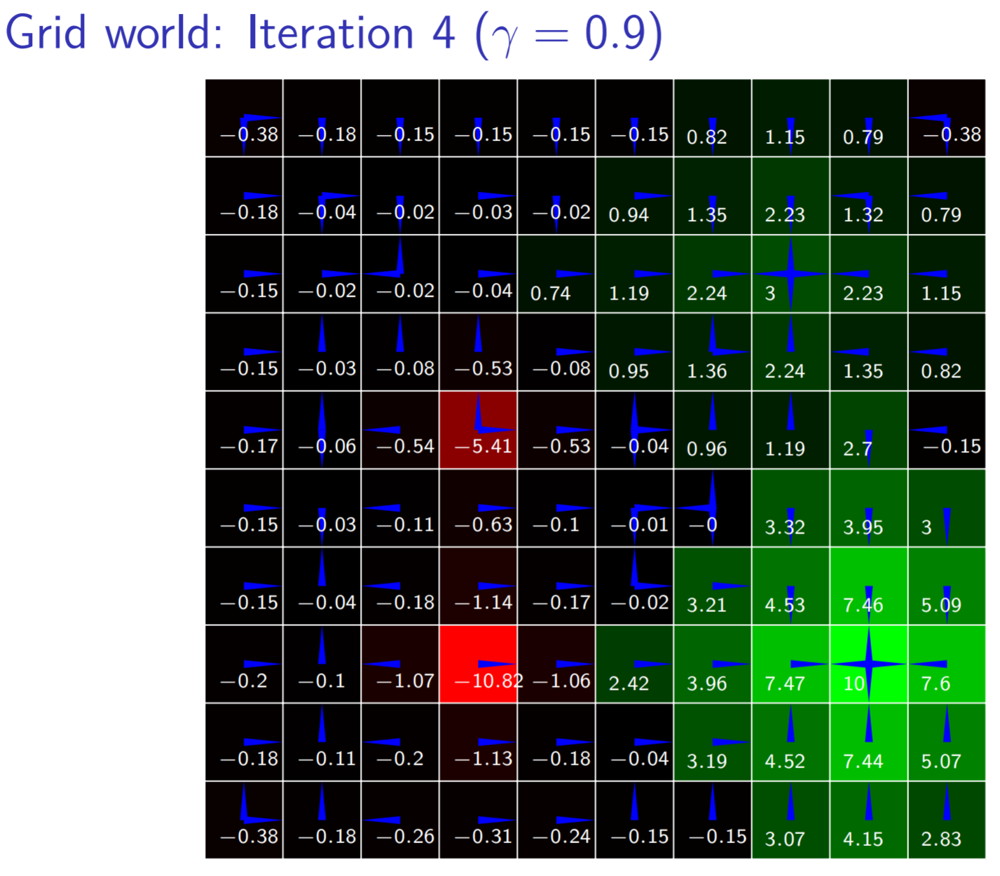
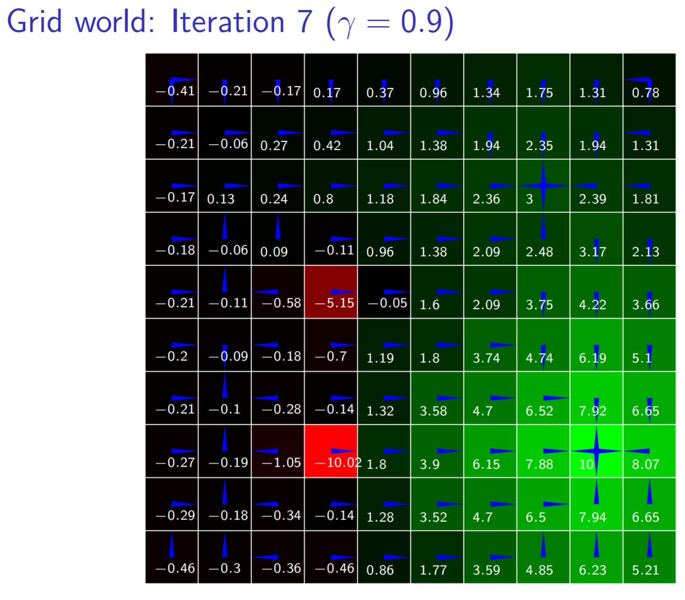
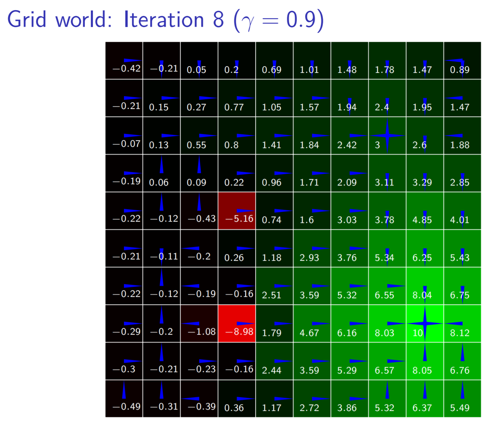
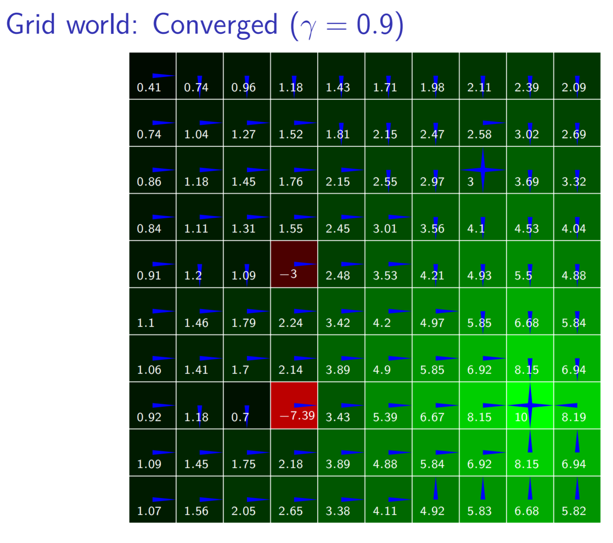

Introduction
We introduce Bandit Problems as a class of sequential optimization problems which require algorithmic techniques to study and structure solutions.
Standard dynamic proogram concerns sequential decision making problems where the transition model and reward function were known
In many problems, the model and reward are not known in advance
Agent must learn how to act through experience with the world
Here we consider reinforcement learning where an agent receives a reinforcement signal
Definition of intelligence
Of a device or machine: able to vary its behaviour in response to differing requirements, varying situations, or past events
—Oxford English Dictionary
Challenges in reinforcement learning}
Exploration of the world must be balanced with exploitation of knowledge gained through experience
Reward may be received long after the important choices have been made, so credit must be assigned to earlier decisions
Must generalize from limited experience
Outline
Evaluative feedback
Model-based methods
Model-free methods
Generalization
Markov Decision Problems
Agent chooses action \(A_t\) at time \(t\) based on observing state \(S_t\)
State evolves probabilistically based on current state and action taken by agent ( Markov assumption )
Objective is to maximize sum of rewards \(R_1, \ldots\)
Problem is known as a Markov decision process (MDPs)
Defined by transition model \(T(s' \mid s, a)\) and reward model \(R(s, a)\) (often assumed deterministic)
Optimal Behavior
In the finite-horizon model agent should optimize expected reward for the next \(H\) steps: \(E(\sum_{t = 0}^H r_t)\)
In the infinite-horizon discounted model agent should optimize \(E(\sum_{t = 0}^\infty \gamma^t r_t)\)
Discount factor \(0 \leq \gamma < 1\) can be thought of as an interest rate (reward now is worth more than reward in the future)
Discounting keeps utility of an infinite sequence finite
Policies and utilities of states
A policy \(\pi\) specifies what action to execute from every possible state
Action to execute from state \(s\) according to \(\pi\) is denoted \(\pi(s)\)
Expected utility of executing \(\pi\) when starting from \(s\) is denoted \(U^\pi(s)\)
Optimal policy \(\pi^*\) is one that maximizes expected utility: \(\pi^*(s) = \mathop{\mathrm{arg\,max}}_\pi U^\pi(s)\)
Iterative policy evaluation
Incrementally compute expected utility after \(k\) steps of executing \(\pi\)
\(U_0^\pi(s) = 0\)
\(U_1^\pi(s) = R(s, \pi(s))\)
…
\(U_k^\pi(s) = R(s, \pi(s)) + \gamma \sum_{s'} T(s' \mid s, \pi(s)) U_{k-1}^\pi(s')\)
This kind of iterative calculation is called dynamic programming
Policy evaluation
For an infinite horizon, \[U^\pi(s) = R(s, \pi(s)) + \gamma \sum_{s'} T(s' \mid s, \pi(s)) U^\pi(s')\]
Can compute this arbitrarily well with enough iterations of iterative policy evaluation
Alternative is to just solve system of \(N\) linear equations, where \(N\) is the number of states, requiring \(O(n^3)\) time
\(U^\pi = R^\pi + \gamma T^\pi U^\pi\) (in matrix form)
\(U^\pi - \gamma T^\pi U^\pi = R^\pi\)
\((I - \gamma T^\pi) U^\pi = R^\pi\)
\(U^\pi = (I - \gamma T^\pi)^{-1}R^\pi\)
Policy iteration
Policy iteration is one way to compute an optimal policy \(\pi^*\)
The algorithm starts with any policy \(\pi_0\) and iterates the following steps
Policy evaluation: given \(\pi_i\) compute \(U^{\pi_i}\)
Policy improvement: compute new policy from \(U^{\pi_i}\) \[\pi_{i+1}(s) = \mathop{\mathrm{arg\,max}}_a [ R(s, a) + \gamma \sum_{s'} T(s' \mid s, a) U^{\pi_i}(s')]\]
Algorithm terminates when there is no more improvement
Since every step leads to improvement and there are finitely many policies, algorithm terminates at optimal solution
Value iteration
An alternative algorithm is value iteration
Bellman equation says value of optimal policy is given by \[U^*(s) = \max_a [R(s, a) + \gamma \sum_{s'} T(s' \mid s, a) U^*(s')]\]
\(U^*_0(s) = 0\) (initialization)
\(U^*_1(s) = \max_a [R(s, a) + \gamma \sum_{s'} T(s' \mid s, a) U_0^*(s')]\)
…
\(U^*_k(s) = \max_a [R(s, a) + \gamma \sum_{s'} T(s' \mid s, a) U_{k-1}^*(s')]\)
\(U^*_k \rightarrow U^*\) as \(k \rightarrow \infty\)
\(\pi(s) = \mathop{\mathrm{arg\,max}}_a [R(s, a) + \gamma \sum_{s'} T(s' \mid s, a) U(s')]\)
Convergence of value iteration
Let \(||U||\) denote the , i.e. \(||U|| = \max_s |U(s)|\)
\(||U^*_k - U^*_{k-1}||\) is known as the
Can be proven that if \(||U^*_k - U^*_{k-1}|| < \epsilon(1-\gamma)/\gamma\) then \(||U^*_k - U^*|| < \epsilon\)
Hence, slower convergence for \(\gamma\) closer to 1
Can also bound policy loss: if \(||U^*_k - U^*|| < \epsilon\) then \(||U^{\pi_k} - U^*|| < 2\epsilon\gamma/(1-\gamma)\)
Example: Grid World
States: cells in \(10\times10\) grid
Actions: up, down, left, and right
Transition model: 0.7 chance of moving in intended direction, uniform in other directions
Reward: two states have cost (and are not terminal),\ two have reward (and are terminal), \(-1\) for wall crash


 







Multi-armed bandit problem}
Multi-armed bandit problems illustrate challenge with exploration and exploitation in a single state environment
There is a slot machine with \(k\) arms
Arm \(i\) pays off 1 or 0 according to unknown parameter \(\theta_i\)
No deposit to play, but limited to \(h\) pulls
Many variations on problem, applicable to allocation of clinical trials, adaptive network routing, etc.
Bayesian estimation of payoff probability
Beta distribution can represent posterior over the win probability \(\theta_i\) for arm \(i\)
Uniform prior distribution is given by \(Beta(1,1)\)
Keep track of number of wins \(w_i\) and number of losses \(\ell_i\) for each arm \(i\)
Posterior for \(\theta_i\) is given by \(Beta(w_i + 1, \ell_i + 1)\)
Bayesian estimation of payoff probability
Red arm has 1 win and 0 loss and blue arm has 4 wins and 1 loss

Posterior probability of winning: \(\rho_i = P(\text{win}_i \mid w_i, \ell_i) = \int_0^1 \theta Beta(w_i + 1, \ell_i + 1)(\theta)\,d\theta = \frac{w_i + 1}{w_i + \ell_i + 2}\)
\(\rho_\text{red} = 2/3 = 0.67\) and \(\rho_\text{blue} = 5/7 = 0.83\)
Maximum likelihood estimates: \(\hat \theta_\text{red} = 1\) and \(\hat \theta_\text{blue} = 0.8\)
Ad-hoc strategies
\(\epsilon\)-greedy: Choose random arm with probability \(\epsilon\), otherwise choose \(\mathop{\mathrm{arg\,max}}_i \rho_i\)
Softmax: Choose arm \(i\) with probability proportional to \(e^{\lambda \rho_i}\) (\(\lambda \geq 0\) is precision parameter)
Interval exploration: Compute \(\alpha\%\) confidence interval for \(\theta_i\), choose arm with highest upper bound
Dynamic programming approach
Counts \(w_1, \ell_1, \ldots, w_k, \ell_k\) represents a , which summarize belief about payoffs
Use dynamic programming to find optimal policy \(\pi^*\) mapping belief states to actions (similar to MDP)
Expected payoff after pulling \(i\) and then acting optimally is denoted \(Q^*(w_1, \ell_1, \ldots, w_k, \ell_k, i)\)
\(U^*(w_1, \ell_1, \ldots, w_k, \ell_k) = \max_i Q^*(w_1, \ell_1, \ldots, w_k, \ell_k, i)\)
\(\pi^*(w_1, \ell_1, \ldots, w_k, \ell_k) = \mathop{\mathrm{arg\,max}}_i Q^*(w_1, \ell_1, \ldots, w_k, \ell_k, i)\)
Computing optimal state-action utility}
\[\begin{align*} &Q^*(w_1, \ell_1, \ldots, w_k, \ell_k, i) = \\ &\frac{w_i + 1}{w_i + \ell_i + 2}U^*(\ldots, w_i + 1, \ell_i, \ldots) + \\ &\left(1 - \frac{w_i + 1}{w_i + \ell_i + 2}\right)U^*(\ldots, w_i, \ell_i + 1, \ldots) \end{align*}\]
When \(\sum_i (w_i + \ell_i) = h\) (i.e., no pulls left) then \(U^*(w_1, \ell_1, \ldots, w_k, \ell_k) = 0\)
Solution is optimal, but computation is exponential in \(h\)
Gittins allocation index method can be used to efficiently solve infinite horizon, discounted version
Translating to a Learning Problem
Rather than compute the optimal policy, treat the policy and the underlying value function as primitives to be learned
In the multi-arm bandit problem we have an on-line learning problem - we learn from data collected via exploration of the problem space, e.g., the agent’s behavior constructs the data.
Use exploratory strategies (see above) but applied to the Bellman equation
This is so called reinforcement learning - these aim to learn the optimal policy directly without use of a model of \(T\) and \(R\)
Incrementally Learning a Mean
Suppose we have a random variable \(X\) and we want to estimate the mean from samples \(x_1, \ldots, x_k\)
After \(k\) samples \(\hat x_k = \frac1k \sum_{i=1}^k x_i\)
Can show that \(\hat x_k = \hat x_{k-1} + \frac1k (x_k - \hat x_{k - 1})\)
Can be written \(\hat x_k = \hat x_{k-1} + \alpha(k) (x_k - \hat x_{k - 1})\)
Learning rate \(\alpha(k)\) can be functions other than \(\frac1k\), loose conditions on learning rate to ensure convergence to mean
If learning rate is constant, weight of older samples decay exponentially at the rate \((1 - \alpha)\)
Update rule: \(\hat x \leftarrow \hat x + \alpha(x - \hat x)\)
Q-learning
One algorithm is called Q-learning
Idea is to apply incremental estimation to \(Q(s, a) = R(s, a) + \gamma \sum_{s'} T(s' \mid s, a) \max_{a'} Q(s', a')\)
Interpretation of the Q-function: Choose action \(a\) and act optimally thereafter.
Use sample of next state \(s'\) and reward \(r\) instead of models
Q-learning rule: \(Q(s, a) \leftarrow Q(s, a) + \alpha(r + \gamma \max_{a'} Q(s', a') - Q(s, a))\)
- Recall: \(\hat x \leftarrow \hat x + \alpha(x - \hat x)\)
Q-learning
Q-learning will converge to the optimal policy
However, Q-learning typically requires
Utility is updated one step at a time
Eligibility traces allow states along a path to be updated

Functional Learning and Generalization
Up to this point, we’ve assumed \(Q\) can be represented as a table, which is only useful for small discrete problems
Problem with larger state spaces is not just the size of \(Q\) table, but the amount of experience required to accurately estimate the values
Agent must generalize from limited experience to states that have not yet been visited
Functional Approximations
Many generalization approaches attempt to approximate \(Q\) with a function $Q_{}(a,s)
One way is to use a perceptron, one for each action

Weights associated with edges
\(q = w_1 x_1 + w_2 x_2 + w_3 x_3\)
Given weights in perceptrons, compute \(Q\) for each action from current state \(\vec x\)
Perceptron Q-learning
Q-learning tells us how to adapt the weights after transitioning to \(\vec{x}'\) from \(\vec{x}\) by action \(a\) and receiving \(r\)
\(q' \leftarrow r + \gamma \max_{a'} Q(\vec{x}', a')\)
Compute error: \(Q(\vec{x}, a) - q'\)
Update weights in perceptron for \(a\) to reduce error using some learning rate
Neural networks (aka Deep RL)
- Neural networks are networks of perceptrons

Organized into input layer, hidden layer, and output layer
Perceptrons only represent linear functions, but neural networks represent non-linear functions
Q-learning works the same way as with perceptrons, though the adjustment of weights is tied to the backpropogation algorithms for fitting neural nets.
Other generalization approaches
Locally weighted regression
Self-organizing maps
Decision trees
Growing neural gas
Support vector machines
Gaussian processes
Tile coding
Radial basis function networks
Policy Function Approximation
Rather than functionally approximate the Q function \(Q_{\theta}(a,s)\) and then derive a policy \(\pi_{\theta}\) from it, it is more efficient to approximate the policy function directly \(\pi_{\theta}\) and apply gradient ascent to the policy parameters \(\theta\).
We need an ability to simulate a Markov Chain of \((s_t,a_t)\) from \(s_0\) given a policy \(\pi_{\theta}\) to approximate the Bellman.
See the